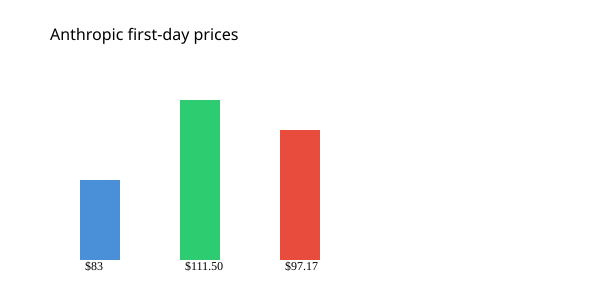

New York · markets · 20 November 2026
Anthropic closed its first Nasdaq day at $97.17 after the largest IPO on record.

What is agreed across desks
Anthropic’s Class A common stock began trading on the Nasdaq Global Select Market on 19 November 2026 under the ticker ANT. The IPO price was $83 per share. Shares opened at $111.50 and closed the session at $97.17, a gain of roughly 17 percent from the offering price. Reuters, Bloomberg, Forbes, Morningstar and the company itself match on the open, the close and the ranking of the offering as the largest IPO by proceeds. Anthropic stated that it sold an aggregate of 1,127,000,000 Class A shares including the full underwriters’ option, with gross proceeds to the company of approximately $91.6 billion before expenses and a concurrent private placement adding further capital.
The fully diluted valuation at the close was reported near $1.77 trillion by Bloomberg and similar figures elsewhere. The company is five years old. It develops the Claude family of models. SpaceX’s June listing raised about $75 billion and remains the prior record. Major indexes declined on the same day; the Nasdaq Composite fell more than 2 percent. Those index moves are checkable against exchange data and do not alter Anthropic’s own open and close.
What is only a quote
Commentary that the debut “tests Wall Street’s faith in the AI boom” or that the valuation signals a bubble is framing. It is not a measured fact about future cash flows. Statements by company executives about safety priorities or the risks of advanced models are the speakers’ positions. They are not independent verification of model performance or of regulatory outcomes. Claims that individual founders became billionaires on the day rest on share counts and the closing price; exact personal holdings are not public in the wires examined here.
Mechanism a reader needs
An IPO transfers ownership of previously private shares to public investors at a set price. Underwriters allocate shares, the stock opens for continuous trading, and the first-day close becomes the market’s initial assessment. A 17 percent gain means buyers who received allocation at $83 could sell at $97.17 the same afternoon, while buyers in the open market paid the higher open. The large share count—more than one billion Class A shares—means the absolute dollar proceeds are high even if the percentage pop is moderate by historical IPO standards. Dual-class or restricted shares and the concurrent private placement to strategic investors (AMD, Broadcom, Google, Microsoft, Nvidia and others) affect the fully diluted figure but not the publicly traded float’s open and close.
Nasdaq listing requires ongoing disclosure, audited financials and compliance with exchange rules. Anthropic is a public-benefit corporation. That legal form does not change the arithmetic of the first-day close. Subsequent trading days will produce new prices. The 19 November close is a single observation, not a permanent valuation.
What this story is not
It is not a finding that artificial intelligence has or has not reached a speculative peak. It is not a statement about Claude’s technical performance relative to other models. It is not evidence that any particular policy toward AI will follow. The photograph above is an exterior of the NYSE building; it is not a picture of the Anthropic team or of the trading session.

Source articles and scores
| Outlet | Headline | T | N | C |
|---|---|---|---|---|
| Reuters | Anthropic’s blockbuster debut tests Wall Street’s faith in AI boom | 96 | 0 | 100 |
| PBS | Anthropic closes 1st day of trading in the biggest IPO on record as shares spike | 94 | 0 | 98 |
| Anthropic | Anthropic announces closing of initial public offering | 98 | +5 | 85 |
Hero: Wikimedia Commons NYSE exterior via Special:FilePath. Chart: local SVG from offer/open/close figures. No news-agency pixels used as src.